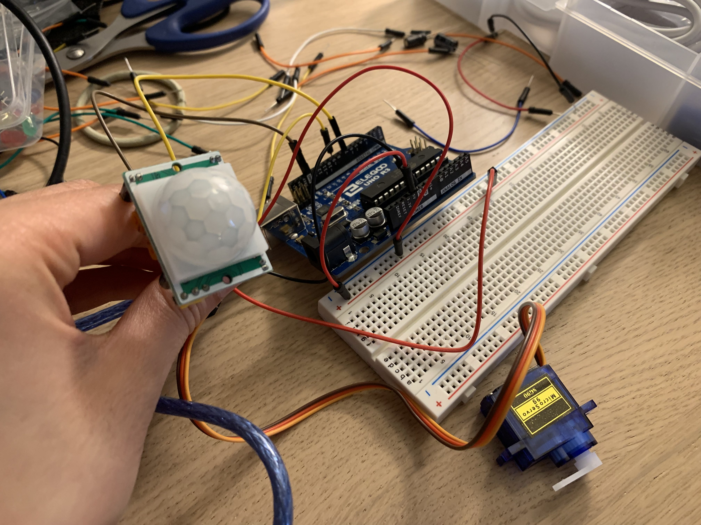

Assignment 4: Libraries!

In this project, I used the servos library along with a motion sensor. Because we haven't worked with motion sensors in class yet (besides tilt switches) I did some googling to see how it worked. For this project assignment, when motion is detected, the servos will turn 90 degrees and turn back to 0 when there is no motion. While using the motion sensor, there is a delay time in between motion and not motion as you can see in the gif, but it still does work as expected after a few tests. The input is the motion sensor and the output is the servos spinning. Pin 7 is used on the motion sensors as digital to detect high or low and Pin 9~ is used to customize how we want the servos to move in analog.
#include
// setting the servo and motion sensor
const int MOTION_SENSOR_PIN = 7; // Arduino pin connected to motion sensor's pin
const int SERVO_PIN = 9; // Arduino pin connected to servo motor's pin
Servo servo; // creating servo object to control a servo
// variables will change:
int angle = 0; // the current angle of servo motor
int lastMotionState; // the previous state of motion sensor
int currMotionState; // the current state of motion sensor
void setup() {
Serial.begin(9600); // initialize serial
pinMode(MOTION_SENSOR_PIN, INPUT); // set arduino pin to input mode
servo.attach(SERVO_PIN); // attaches the servo on pin 9 to the servo object
servo.write(angle);
currMotionState = digitalRead(MOTION_SENSOR_PIN);
}
void loop() {
lastMotionState = currMotionState; // save the last state
currMotionState = digitalRead(MOTION_SENSOR_PIN); // read new state
if (currMotionState == LOW && lastMotionState == HIGH) { // pin state change: LOW -> HIGH
Serial.println("Motion detected!");
servo.write(90);
}
else
if (currMotionState == HIGH && lastMotionState == LOW) { // pin state change: HIGH -> LOW
Serial.println("Motion stopped!");
servo.write(0);
}
}